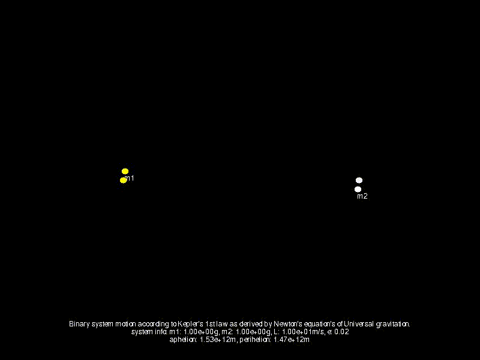
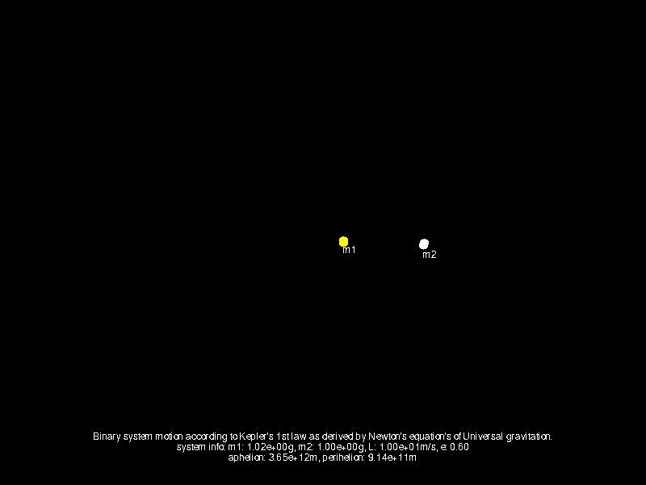

Kerpler's first law states that the motion of a planet is an ellipse with the sun as one of it's foci: $$r = {p \over 1 + \epsilon \cos(\theta)}$$ Newton's universal gravitation law is: $$F = {{GM_1M_2} \over {r^2}}$$ It can be then derived that: $$r = \frac{L^2 / \mu^2}{GM (1 + \epsilon \cos{\theta})}$$ where \(L\) is the orbital angular momentum, \(\mu = \frac{M_1M_2}{M_1+M_2}\), \(G = 6.6742867e-11 Nm^2kg^{-2}\), \(M = M_1+M_2\), \(\epsilon\) is the elliptical motion eccentricity and \(\theta\) is the angle from the focus (sun) to the orbit's aphelion.\
Here is the motion of to identical mass objects forming a binary system. We increase the ecentricity of the orbital elipse to emphasize the difference in motion of diffrent \(\epsilon\) values. 
Here \(\epsilon\) is fixed to 0.6, and we gradually increase the mass of \(M_1\) (the yellow object). 